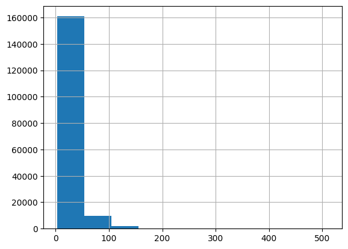
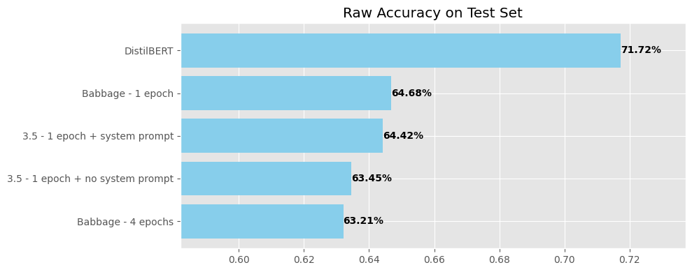

!pip install evaluate datasets transformers[torch]zsh:1: no matches found: transformers[torch]!pip install evaluate datasets transformers[torch]zsh:1: no matches found: transformers[torch]from transformers import (
AutoTokenizer,
AutoModelForSequenceClassification,
DataCollatorWithPadding,
Trainer,
TrainingArguments,
)
import numpy as np
from datasets import load_dataset
import random/opt/homebrew/lib/python3.11/site-packages/bitsandbytes/cextension.py:34: UserWarning: The installed version of bitsandbytes was compiled without GPU support. 8-bit optimizers, 8-bit multiplication, and GPU quantization are unavailable.
warn("The installed version of bitsandbytes was compiled without GPU support. "'NoneType' object has no attribute 'cadam32bit_grad_fp32'SEED = 42
# Setting the seed for the random library to ensure consistent results
random.seed(SEED)# 'star' is a column in our dataset and we want to convert it to a ClassLabel column
# so we can stratify our samples.
# Importing the ClassLabel module to represent categorical class labels
# Loading the 'app_reviews' dataset's training split into the 'dataset' variable
dataset = load_dataset("app_reviews", split="train")
# Converting the 'star' column in our dataset to a ClassLabel type
# This allows for categorical representation and easier handling of classes
dataset = dataset.class_encode_column("star")
# Displaying the dataset to see the changes
datasetDataset({
features: ['package_name', 'review', 'date', 'star'],
num_rows: 288065
})# Splitting the dataset into a training set and a test set.
# We reserve 20% of the data for testing and use stratification on the 'star' column
# to ensure both sets have an equal distribution of each star category.
dataset = dataset.train_test_split(test_size=0.2, seed=SEED, stratify_by_column="star")
# Now, we further split our training dataset to reserve 25% of it for validation.
# Again, we stratify by the 'star' column to keep the distribution consistent.
df = dataset["train"].train_test_split(
test_size=0.25, seed=SEED, stratify_by_column="star"
)
# Assigning the split datasets to their respective keys:
# - The remaining 75% of our initial training data becomes the new training dataset.
dataset["train"] = df["train"]
# - The 25% split from our initial training data becomes the validation dataset.
dataset["val"] = df["test"]
# Displaying the dataset to see the distribution across train, test, and validation sets.
datasetDatasetDict({
train: Dataset({
features: ['package_name', 'review', 'date', 'star'],
num_rows: 172839
})
test: Dataset({
features: ['package_name', 'review', 'date', 'star'],
num_rows: 57613
})
val: Dataset({
features: ['package_name', 'review', 'date', 'star'],
num_rows: 57613
})
})MODEL = "distilbert-base-cased"
tokenizer = AutoTokenizer.from_pretrained(MODEL)/opt/homebrew/lib/python3.11/site-packages/huggingface_hub/file_download.py:1132: FutureWarning: `resume_download` is deprecated and will be removed in version 1.0.0. Downloads always resume when possible. If you want to force a new download, use `force_download=True`.
warnings.warn(# simple function to batch tokenize utterances with truncation
def preprocess_function(examples): # each example is an element from the Dataset
return tokenizer(examples["review"], truncation=True)# DataCollatorWithPadding creates batch of data. It also dynamically pads text to the
# length of the longest element in the batch, making them all the same length.
# It's possible to pad your text in the tokenizer function with padding=True, dynamic padding is more efficient.
data_collator = DataCollatorWithPadding(tokenizer=tokenizer)sequence_clf_model = AutoModelForSequenceClassification.from_pretrained(
MODEL,
num_labels=5,
)Some weights of DistilBertForSequenceClassification were not initialized from the model checkpoint at distilbert-base-cased and are newly initialized: ['classifier.bias', 'classifier.weight', 'pre_classifier.bias', 'pre_classifier.weight']
You should probably TRAIN this model on a down-stream task to be able to use it for predictions and inference.sequence_clf_modelDistilBertForSequenceClassification(
(distilbert): DistilBertModel(
(embeddings): Embeddings(
(word_embeddings): Embedding(28996, 768, padding_idx=0)
(position_embeddings): Embedding(512, 768)
(LayerNorm): LayerNorm((768,), eps=1e-12, elementwise_affine=True)
(dropout): Dropout(p=0.1, inplace=False)
)
(transformer): Transformer(
(layer): ModuleList(
(0-5): 6 x TransformerBlock(
(attention): MultiHeadSelfAttention(
(dropout): Dropout(p=0.1, inplace=False)
(q_lin): Linear(in_features=768, out_features=768, bias=True)
(k_lin): Linear(in_features=768, out_features=768, bias=True)
(v_lin): Linear(in_features=768, out_features=768, bias=True)
(out_lin): Linear(in_features=768, out_features=768, bias=True)
)
(sa_layer_norm): LayerNorm((768,), eps=1e-12, elementwise_affine=True)
(ffn): FFN(
(dropout): Dropout(p=0.1, inplace=False)
(lin1): Linear(in_features=768, out_features=3072, bias=True)
(lin2): Linear(in_features=3072, out_features=768, bias=True)
(activation): GELUActivation()
)
(output_layer_norm): LayerNorm((768,), eps=1e-12, elementwise_affine=True)
)
)
)
)
(pre_classifier): Linear(in_features=768, out_features=768, bias=True)
(classifier): Linear(in_features=768, out_features=5, bias=True)
(dropout): Dropout(p=0.2, inplace=False)
)dataset = dataset.map(preprocess_function, batched=True)dataset = dataset.rename_column("star", "label")
dataset = dataset.remove_columns(["package_name", "review", "date"])
datasetDatasetDict({
train: Dataset({
features: ['label', 'input_ids', 'attention_mask'],
num_rows: 172839
})
test: Dataset({
features: ['label', 'input_ids', 'attention_mask'],
num_rows: 57613
})
val: Dataset({
features: ['label', 'input_ids', 'attention_mask'],
num_rows: 57613
})
})import pandas as pd
input_ids = dataset["train"]["input_ids"]
pd.Series(input_ids).apply(len).hist()
datasetDatasetDict({
train: Dataset({
features: ['label', 'input_ids', 'attention_mask'],
num_rows: 172839
})
test: Dataset({
features: ['label', 'input_ids', 'attention_mask'],
num_rows: 57613
})
val: Dataset({
features: ['label', 'input_ids', 'attention_mask'],
num_rows: 57613
})
})def compute_metrics(p):
preds = np.argmax(p.predictions, axis=1)
return {"accuracy": (preds == p.label_ids).mean()}epochs = 1
training_args = TrainingArguments(
output_dir="./bert_clf_results",
num_train_epochs=epochs,
per_device_train_batch_size=16,
gradient_accumulation_steps=2,
per_device_eval_batch_size=32,
load_best_model_at_end=True,
# some deep learning parameters that the Trainer is able to take in
warmup_ratio=0.1,
weight_decay=0.05,
logging_steps=1,
log_level="info",
evaluation_strategy="epoch",
eval_steps=50,
save_strategy="epoch",
)
# Define the trainer:
trainer = Trainer(
model=sequence_clf_model,
args=training_args,
train_dataset=dataset["train"],
eval_dataset=dataset["val"],
compute_metrics=compute_metrics, # optional
data_collator=data_collator, # technically optional
)/usr/local/lib/python3.10/dist-packages/transformers/training_args.py:1474: FutureWarning: `evaluation_strategy` is deprecated and will be removed in version 4.46 of 🤗 Transformers. Use `eval_strategy` instead
warnings.warn(
PyTorch: setting up devices
The default value for the training argument `--report_to` will change in v5 (from all installed integrations to none). In v5, you will need to use `--report_to all` to get the same behavior as now. You should start updating your code and make this info disappear :-).trainer.evaluate()***** Running Evaluation *****
Num examples = 57613
Batch size = 32{'eval_loss': 1.6827906370162964,
'eval_accuracy': 0.04603127766302744,
'eval_runtime': 158.8995,
'eval_samples_per_second': 362.575,
'eval_steps_per_second': 11.334}trainer.train()***** Running training *****
Num examples = 172,839
Num Epochs = 1
Instantaneous batch size per device = 16
Total train batch size (w. parallel, distributed & accumulation) = 32
Gradient Accumulation steps = 2
Total optimization steps = 5,401
Number of trainable parameters = 65,785,349| Epoch | Training Loss | Validation Loss |
|---|
| Epoch | Training Loss | Validation Loss | Accuracy |
|---|---|---|---|
| 0 | 0.980200 | 0.819233 | 0.716418 |
***** Running Evaluation *****
Num examples = 57613
Batch size = 32Saving model checkpoint to ./bert_clf_results/checkpoint-5401
Configuration saved in ./bert_clf_results/checkpoint-5401/config.json
Model weights saved in ./bert_clf_results/checkpoint-5401/model.safetensors
Training completed. Do not forget to share your model on huggingface.co/models =)
Loading best model from ./bert_clf_results/checkpoint-5401 (score: 0.819233238697052).TrainOutput(global_step=5401, training_loss=0.8730425443986548, metrics={'train_runtime': 1405.4036, 'train_samples_per_second': 122.982, 'train_steps_per_second': 3.843, 'total_flos': 3506405066166240.0, 'train_loss': 0.8730425443986548, 'epoch': 0.9999074331204295})trainer.evaluate(dataset["test"])***** Running Evaluation *****
Num examples = 57613
Batch size = 32{'eval_loss': 0.8123031258583069,
'eval_accuracy': 0.717233957613733,
'eval_runtime': 163.3375,
'eval_samples_per_second': 352.724,
'eval_steps_per_second': 11.026,
'epoch': 0.9999074331204295}import pandas as pd
# Create a dictionary with your data
data = {
"Model Description": [
"Babbage - 1 epoch",
"Babbage - 4 epochs",
"3.5 - 1 epoch + no system prompt",
"3.5 - 1 epoch + system prompt",
"DistilBERT",
],
"Raw Accuracy": [
0.6467637512367,
0.6320795653758701,
0.6345442868796973,
0.6442296009581171,
0.71723395761,
],
}
# Create DataFrame
df = pd.DataFrame(data)
# To make it more readable, let's round the numeric values to a fixed number of decimal places:
df_rounded = df.round(5)
df_rounded| Model Description | Raw Accuracy | |
|---|---|---|
| 0 | Babbage - 1 epoch | 0.64676 |
| 1 | Babbage - 4 epochs | 0.63208 |
| 2 | 3.5 - 1 epoch + no system prompt | 0.63454 |
| 3 | 3.5 - 1 epoch + system prompt | 0.64423 |
| 4 | DistilBERT | 0.71723 |
import matplotlib.pyplot as plt
# Find the minimum accuracy values for setting xlim
min_raw_accuracy = min(df_rounded["Raw Accuracy"]) - 0.05
max_raw_accuracy = max(df_rounded["Raw Accuracy"]) + 0.02
# Set the style
plt.style.use("ggplot")
# Define figure and axis for the accuracy plot
fig, ax = plt.subplots(figsize=(10, 4)) # Adjust the figure size as needed
df_rounded.sort_values("Raw Accuracy", inplace=True, ascending=True)
ax.barh(df_rounded["Model Description"], df_rounded["Raw Accuracy"], color="skyblue")
ax.set_title("Raw Accuracy on Test Set")
ax.set_xlim(min_raw_accuracy, max_raw_accuracy) # Extend the x-axis
for i, v in enumerate(df_rounded["Raw Accuracy"]):
ax.text(v, i, "{:,.2f}%".format(v * 100), va="center", ha="left", fontweight="bold")
# Adjust the layout
plt.tight_layout()
# Show the plot for accuracy
plt.show()